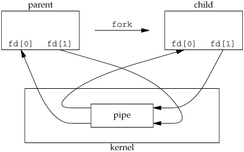

本次课内容与目标
理解操作系统中的终端设备和编程
- 终端是操作系统里的一个对象
学习 Shell 的实现
- pipe-fork-execve: UNIX 哲学的基础
- 信号和 job control
终端

终端：为何经久不衰？
今天的计算机软件需要
- 终端恰恰满足了这两点
输入/输出设备的变迁
- 鼠标 (触摸屏)
- 高分辨率显示器
- 语音/肢体输入
- 脑机接口？
终端的抽象：操作系统里的一个对象
终端是一个可以读写的对象
- “everything is a file”——终端也是个文件
- 交互式 shell 的 stdin/stdout/stderr 都是终端
tty 命令查看当前终端
ttytty < /dev/nullstrace tty- 操作系统课的乐趣在于 “尝试”
从终端输入
终端默认是 “cooked (canonical) mode”，即自带一个 “行编辑器”
- vim 用户:
set -o vi(bash);bindkey -v(zsh) - 只有按下回车键，read 系统调用才返回
另一个 “raw mode” 按键即返回 (tty-raw.c)
- 有了它，就能实现 vim 啦！
- 有了它，给 read 设置一个 timeout，就能在没有按键的前提下更新屏幕啦！
- 实现游戏
向终端输出: ANSI Escape Codes
一系列终端 “密码” (in-band 控制信号)
- 例子：
ls --color | less，看到好多 ESC - 例子：无限接近 “图形界面” 的 dialog.sh
- 例子：sperf 参考实现对 escape code 的封装
#define ESC "\033[" #define move(x, y) put(ESC "%d;%dH", y + 1, x + 1) #define setbg(c) put(ESC "48;5;%dm", c) #define setfg(c) put(ESC "38;5;%dm", c) #define clear() put(ESC "2J") #define reset() put(ESC "39m" ESC "49m")
打印二进制文件，“偶然” 的 escape code 可能改变终端的行为
- reset (1)
向终端输出
以为故事结束了？诡异的事情发生了……
ls --color=auto
ls --color=auto | less
- 你发现什么不同了吗？
- 试试
ls --color | cat
还记得 fork 时候的例子吗？
./a.out和./a.out | wc -l得到的行数不同
一些分析
两个命令执行的唯一差别是 stdout 输出对象不同
- 应用程序根据是不是终端，写入了不同的数据
比较 strace/ltrace 的 diff!
strace ls --color=auto 2> strace-a.log
strace ls --color=auto > /dev/null 2> strace-b.log
破案结果
- libc:
isatty(1)- stdout 是否是 tty (竟然看懂了)- 参考: setbuf (3); fork 的问题到此全部解决
- syscall:
ioctl(1, TCGETS, ...)- 用于管理文件 (对象) 的系统调用；下半学期讲解
更多的终端控制
termios (3)
- “a general terminal interface that is provided to control asynchronous communications ports”
有兴趣的同学：
$ stty -a
speed 38400 baud; rows 24; columns 80; line = 0;
intr = ^C; quit = ^\; erase = ^?; kill = ^U; eof = ^D; eol = <undef>;
eol2 = <undef>; swtch = <undef>; start = ^Q; stop = ^S; susp = ^Z; rprnt = ^R;
werase = ^W; lnext = ^V; discard = ^O; min = 1; time = 0;
-parenb -parodd -cmspar cs8 -hupcl -cstopb cread -clocal -crtscts
...
Shell 和 Hello World
UNIX Shell
我们是操作系统的用户。操作系统是系统调用的 API。那我们怎么用操作系统？？
- 是一个最基础的 “把命令翻译成系统调用” 的程序
- Bash is an
sh-compatible command language interpreter that executes commands read from the standard input or from a file.”
- Bash is an
- 原来我们一直在编程
- 直到有了 graphical shell (Windows, Gnome, ...)
脾气有点小古怪的 UNIX 世界
“Unix is user-friendly; it's just choosy about who its friends are.”
- 但如果把 shell 理解成编程语言，“不好用” 好像也没什么毛病了
- 命令的语法也是这个语言的一部分
你见过哪个编程语言 “好用” 的？

UNIX Shell: 语言设计
在 “自然语言”、“机器语言” 和 “1980s 的算力” 之间的优雅平衡
- text stream + 命令行工具的组合 (workflow)
- 重定向:
cmd > file < file 2> /dev/null - 顺序结构:
cmd1; cmd2,cmd1 && cmd2,cmd1 || cmd2 - 管道:
cmd1 | cmd2 - 预处理:
$(),<()
- 重定向:
1980s 设计的问题
- 操作的 “优先级”？
echo hello > a.txt | cat(试试 bash 和 zsh)
- 文本数据 “责任自负”
PowerShell 可以说在多方面的设计都是完美的，可惜没人用
Shell: 不断解释执行的循环
while (1) {
char *cmd = readline(get_env("PS1"));
if (!cmd) {
parse_and_execute(cmd);
free(cmd);
}
}
Shell 的 “命令提示符”
- PS1: default
- PS2: “command continuation”
- PS3: select operator
- PS4: debug mode (
-x)
./hello 的实现
fork-execve
void run_cmd(const char *cmd) {
if (fork1() == 0) {
execve(
parse_file(cmd),
parse_arg(cmd),
shell_env
);
} else {
wait(0);
}
}
void fork1() {
int pid = fork();
if (pid < 0) panic("cannot fork");
}
./hello > /dev/null 的实现
fork-dup-execve
if (fork1() == 0) {
if (redirect) {
fd = open(redirect_path, ...);
dup2(fd, STDOUT_FILENO);
close(fd);
}
execve(parse_file(cmd), parse_arg(cmd), shell_env);
} else {
wait(0);
}
实现重定向 (cont'd)
System 的行为一旦丰富起来，坑就多了
- 回顾一下刚才的代码！
$ echo hello > /etc/a.txt
bash: /etc/a.txt: Permission denied
$ sudo echo hello > /etc/a.txt
bash: /etc/a.txt: Permission denied

./hello | wc -l 的实现
pipe(2): 在操作系统中创建一个管道对象和它的读/写口
pipefd[0]- read end；pipefd[1]- write end- pipe + fork 实现管道通信

RTFSC: xv6-sh.c
- 看看别人怎么写 C 代码的！
福利：为什么 Ctrl-C 能退出程序？
Ctrl-C: 一点也不简单
如果你仔细想一想，Ctrl-C 似乎很复杂！

Ctrl-C 并不能杀掉所有程序
- Stack Overflow: helping one million developers exit vim (2017)
- 这些是怎么发生的？
Ctrl-C 是在程序运行的时候按下的
- 谁收到了 Ctrl-C 这个输入？
- shell: 不是我!
read(STDIN_FILENO, buf, size); - a.out: 不是我!
read(STDIN_FILENO, buf, size);
- shell: 不是我!
Ctrl-C 的背后
涉及若干操作系统中的对象
- 按下 Ctrl-C 的终端
- tty (1)
echo hello > $(tty)(我们甚至可以向其他 tty 打印)
- 被 Ctrl-C 的进程
- 这个问题稍微有些复杂
tty 向前台的进程组 (process group) 发送 SIGINT 信号
- 进程组我们稍后再讲
- 先假设给一个进程发信号好了
信号 (Signal) 机制
操作系统内异步地通知进程的机制
- 管道 (pipe)/共享内存 (mmap) 都是同步的进程间通信机制
- 除非进程主动读/写，否则通信就是一厢情愿的
- 模拟了硬件的中断机制
- 虚拟化：进程是 “虚拟计算机”
- 计算机上有
- 在事件到来的时候中断处理器
- 跳转到处理器预设的中断处理程序
- 进程上也可以有
- 在事件到来的时候 signal 进程
- 跳转到处理器预设的 signal 处理程序
- 计算机上有
- 虚拟化：进程是 “虚拟计算机”
signal 和 kill
ANSI C signal handling
#include <signal.h>
typedef void (*sighandler_t)(int);
sighandler_t signal(int signum, sighandler_t handler);
为编号为 signum 的信号设置处理程序 handler
SIG_IGN(ignore),SIG_DFL(default), 或是一个函数的地址- demo: signal-handler.c
- stty 可以查看更多的终端控制命令 (Ctrl-D, Ctrl-\, ...)
- demo: signal-handler.c
使用 kill 系统调用发送信号
- 命令行：
kill -SIGNAME pid- 可以对刚才的 signal-handler.c 发送
SIGINT,SIGQUIT, ...SIGKILL(9) 是不可忽略的信号 (强行终止，因此不推荐)
- 可以对刚才的 signal-handler.c 发送
SIGSEGV 和 SIGFPE
大家熟悉的 Segmentation Fault/Floating point exception (core dumped)
- #GP, #PF 或 #DIV
- UNIX 系统会给进程发送一个信号
- 此时可以生成一个 “core” 文件 (ELF 格式)，能用 gdb 调试
UNIX (System V) 信号其实是有一些 dark corners 的
- 如果
SIGSEGV里再次SIGSEGV?- POSIX.1 solved the portability mess by specifying
sigaction(2), which provides explicit control of the semantics when a signal handler is invoked; use that interface instead ofsignal().- 支持多线程 (早期的 UNIX 还没有多线程)、信号屏蔽、……
- POSIX.1 solved the portability mess by specifying
另一个拷问灵魂的问题
如果一个进程 fork() 了很多份
- 我们按 Ctrl-C 到底是杀掉一个，还是杀掉全部？
- 如果我 fork 了一份计算任务呢？
- 如果我 fork 了一个 shell 呢？
- 呃……
Shell 的一个重要功能: Job Control
- 等效于 graphical shell (Windows/MacOS) 窗口上的 “叉叉” 和 “最小化”
- 命令行也可以管理多个程序的运行！
UNIX Shell 中的 Job Control
任务管理
jobs: 查看 (+: most current job;-: previous job)kill %1杀掉 job (/bin/kill %1就不行，为什么？)- Ctrl-C 给前台
job 发送SIGINT
前台/后台运行
./a.out &创建 job 后台运行- Ctrl-Z 可以把前台 job 放到后台 (并暂停)
- vim 放到后台就 “suspended”
bg/fg可以切换前台后台执行
Job Control 背后的机制
RTFM: setpgid/getpgid(2)，它解释了 process group, session, controlling terminal 之间的关系。
- The PGID (process-group ID) is preserved across an execve(2) and inherited in fork(2)...
- Each process group is a member of a session

Job Control: RTFM (cont'd)
- A session can have a controlling terminal.
- At any time, one (and only one) of the process groups in the session can be the foreground process group for the terminal; the remaining process groups are in the background.
./a.out &创建新的进程组 (使用 setpgid)
- If a signal is generated from the terminal (e.g., typing the interrupt key to generate
SIGINT), that signal is sent to the foreground process group.- Ctrl-C 是终端 (设备) 发的信号，发给 foreground 进程组
- 所有 fork 出的进程 (默认同一个 PGID) 都会收到信号
- At any time, one (and only one) of the process groups in the session can be the foreground process group for the terminal; the remaining process groups are in the background.
Job Control: RTFM (cont'd)
- Only the foreground process group may read(2) from the terminal; if a background process group tries to read(2) from the terminal, then the group is sent a
SIGTTINsignal, which suspends it.- 这解释了
cat &时你看到的 “suspended (tty input)” - 同一个进程组的进程 read tty 会竞争
- 通常你不会写这样的程序
- 这解释了
- The
setpgid()andgetpgrp()calls are used by programs such as bash(1) to create process groups in order to implement shell job control.- 如果希望从进程组里 detach, 使用 setpgid
ps -eo pid,pgid,cmd可以查看进程的 pgid
Job Control: 小结

总结
总结
理解终端和 Shell
- Shell: UNIX 中最基础的应用程序
- 将用户命令翻译程序系统调用
- 基于终端和操作系统 API (fork-pipe-execve, job control) 实现
Take-away messages
- 操作系统至此已没有任何 “神秘感”
./a.out的执行- shell 使用 read 从 tty 设备读到命令后经过 fork-execve 加载了动态链接的 ELF 对象
a.out
- shell 使用 read 从 tty 设备读到命令后经过 fork-execve 加载了动态链接的 ELF 对象